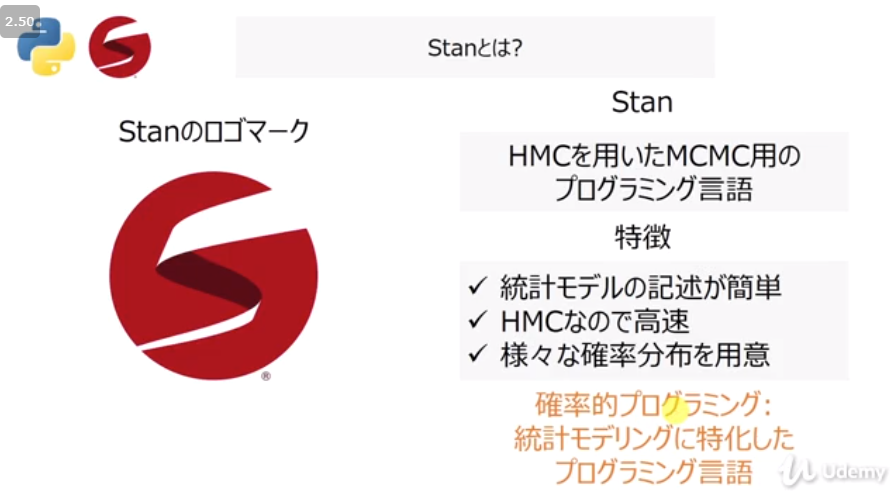
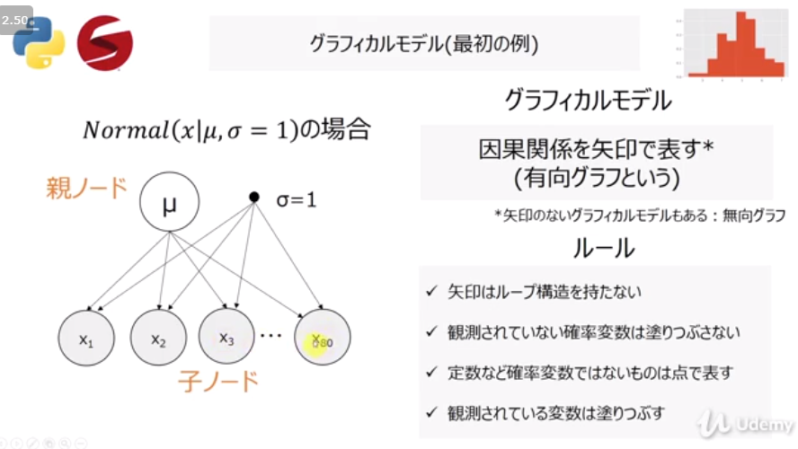
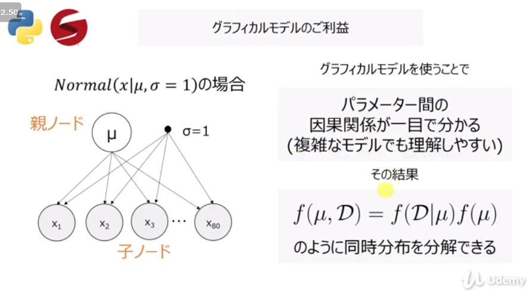
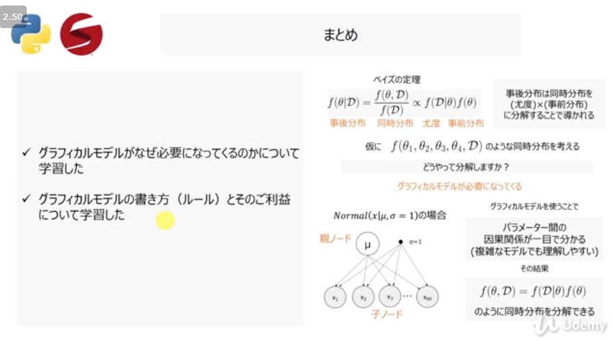

Machine-Manual-ja
17.06.Beta
CG
algorytm
framework 比較
framework workflow
image
kaggle
mindmap png
ml scratch スクラッチでの実装
nlp 自然言語処理
Python
Data Scientist 統計学
カイ二乗検定
scientist_statistics datascience
takitsuba_midoribon
udemy_probability
ch01
ch02_montecarro
ch03_MCMC
ch_pystan
pystan
pystan
ch_pystan PyStanでのHelloWorld
ch_pystan ベイズ信頼区間・予測区間
ch_pystan ロジスティック回帰
ch_pystan 単回帰
ch_pystan 状態空間モデル
ch_pystan 重回帰
ch_pystan 階層ベイズモデル
ch_python
web application framework etc
Machine-Manual-ja
Docs
»
Data Scientist 統計学
»
udemy_probability
»
ch_pystan
»
pystan
Edit on GitHub
pystan
¶



